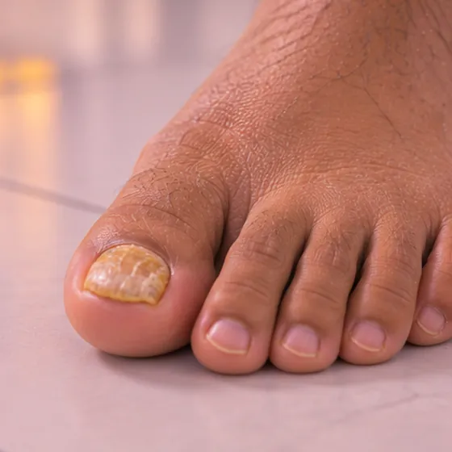

Kuku kaki menebal
Kuku kaki yang menjadi lebih tebal, sukar dipotong, dan selalunya berubah warna atau tidak rata
Apa itu
Satu atau lebih kuku kaki perlahan-lahan menjadi lebih tebal daripada biasa, mungkin bertukar kuning, putih atau perang, dan sukar dipotong; kulat ialah punca yang biasa.
- Kuku kaki
- Lebih biasa dengan usia
- Kuku tebal, kuning, rapuh
- Jumpa doktor
- Doktor keluarga, doktor kulit (pakar dermatologi) atau doktor kaki (podiatris)
- Biasa pada
- Warga emas; pesakit diabetes, kaki yang berpeluh atau mereka yang memakai kasut ketat
- Berjangkit
- Sesetengah jenis boleh berjangkit: kulat kuku boleh merebak ke kuku lain dan kepada orang lain
- Perjalanan
- Perlahan: kuku kaki tumbuh perlahan, jadi sebarang perubahan mengambil masa berbulan-bulan
Tanda biasa

Kuku tebal dan berubah warnaDistrofi kuku 
Kuku rapuh dan beralurKuku rapuh
Tanda-tanda lain
- Warna bertukar kuning, putih atau perang
- Serpihan di bawah kuku, kadang-kadang dengan sedikit bau
- Rasa tidak selesa dalam kasut, terutamanya apabila kuku menekan jari kaki
Mengapa ia berlaku

Peningkatan usiaPenuaan
Punca lain
- Jangkitan kulat pada kuku ialah punca yang biasa
- Tekanan atau kecederaan berulang, seperti kasut ketat atau terantuk jari kaki
- Keadaan kulit seperti psoriasis
- Diabetes atau aliran darah yang lemah ke kaki
Jumpa doktor dahulu jika
- Jari kaki merah, panas, bengkak dengan nanah, atau kemerahan merebak ke atas kaki, terutamanya dengan demam: jumpa doktor hari ini
- Sebarang perubahan kuku atau luka pada kaki, terutamanya dengan diabetes atau aliran darah yang lemah
- Jalur atau tompok perang gelap atau hitam di bawah kuku yang bukan disebabkan oleh terantuk
- Kuku yang berdarah, ada ketulan, atau sakit sehingga sukar berjalan
- Perubahan kuku yang terus merebak ke kuku lain atau kulit di sekelilingnya
Jika mana-mana berkenaan, sila jumpa doktor sebelum sesi.
Halaman ini ialah maklumat am. Sila terus mengambil ubat biasa anda dan terus berjumpa doktor.
Teruskan mengambil ubat biasa anda dan terus berjumpa doktor. Sesi kami ialah sokongan lembut dan tidak menggantikan rawatan perubatan.
Menjaga diri

Pakai kasut selesa dan menyokongKasut sokongan 
Jangan berkongsi tuala, pisau cukur atau cawanBarang peribadi
Lebih banyak cara menjaga diri
- Pastikan kaki bersih dan kering, dan keringkan celah jari kaki dengan baik selepas mencuci
- Potong lurus selepas mencuci, apabila kuku lebih lembut, dengan pemotong kuku yang bersih
- Jangan korek kuku yang tebal. Jika menghidap diabetes atau kaki kurang rasa, minta doktor kaki memotongnya
Beritahu ahli terapi anda
- Diabetes atau deria kulit berkurang
- Kulit luka, merah atau sakit
- Kehamilan
Ahli terapi anda akan menyemaknya bersama anda sebelum bermula.
Soalan dan jawapan
Apakah Kuku kaki menebal?
Kuku kaki yang menjadi lebih tebal, sukar dipotong, dan selalunya berubah warna atau tidak rata. Satu atau lebih kuku kaki perlahan-lahan menjadi lebih tebal daripada biasa, mungkin bertukar kuning, putih atau perang, dan sukar dipotong; kulat ialah punca yang biasa.
Apakah tanda biasa Kuku kaki menebal?
Kuku tebal dan berubah warna · Kuku rapuh dan beralur
Mengapa Kuku kaki menebal berlaku?
Peningkatan usia
Bagaimana menjaga diri dengan Kuku kaki menebal?
Pakai kasut selesa dan menyokong · Jangan berkongsi tuala, pisau cukur atau cawan
Bolehkah sesi AI Body Master membantu Kuku kaki menebal?
Sesi ialah sokongan meridian tanpa jarum yang lembut untuk kesejahteraan anda. Ia tidak merawat atau menyembuhkan Kuku kaki menebal dan tidak menggantikan ubat atau doktor anda. Beritahu ahli terapi anda sebelum sesi bermula.
Keadaan berkaitan
- Vitiligo
- Vitiligo (sopak)
- Albinisme
- Pitiriasis alba (tompok pucat bersisik)
- Dermatitis seboroik (ruam jenis kelemumur)
- Piebaldisme
- Ruam makulopapular
- Keguguran rambut bertompok (alopesia areata)
- Gangguan menarik rambut (trikotilomania)
- Tifus
- Purpura fulminans
- Keratolisis eksfoliativa (tapak tangan/kaki mengelupas)
Rujukan: General information based on public health sources such as Mayo Clinic, NHS, Cleveland Clinic and NCBI StatPearls.
Halaman dikemas kini: 2026-11-04